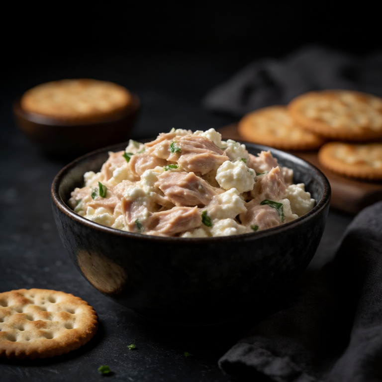
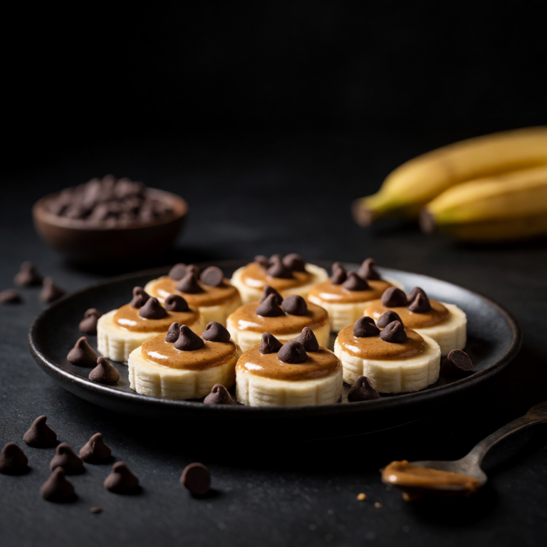

A proper tuna salad. Mayo, celery, dijon, capers. Scooped onto crackers.
A small snack still deserves attention. Let quality tuna carry the bite, use mayonnaise for contrast, and add the salt, heat, or acid while the food is at its best.
At a Glance
Prep
8m
Cook
0m
Serves
1
Difficulty
Easy
Rate this slopBe the first to rate it.
Ingredients
Method
- 01
Mix
Drain the 1 can of tuna and combine with 2 tablespoons of mayo, 1 finely diced celery stalk, 1 teaspoon of dijon, 1 tablespoon of chopped capers, and lemon juice. Season with black pepper and mix well. Taste and adjust.
- 02
Plate
Serve alongside a pile of crackers for scooping, then finish with the listed garnishes. Serve right away while the hot ingredients are hot and the crisp ingredients still have their texture.
Easy swaps
Missing quality tuna? Any sturdy cracker-worthy substitute works. The point is contrast between bites, not exact replication.
Storage
Keep quality tuna and mayonnaise in separate containers if saving a portion. Refrigerate overnight at most, then restore the crunch or warmth before serving.
Slop Notes
Quality tuna makes a huge difference. Ortiz in olive oil is in a completely different league from generic supermarket tuna.
Recipe by foidslop · How we create our recipes
The Weekly Slop
Seven dinners for one, one short note, every Sunday. No life story.
One email every Sunday. Unsubscribe whenever. Double opt-in. See the privacy policy.
Keep eating
Related recipes

